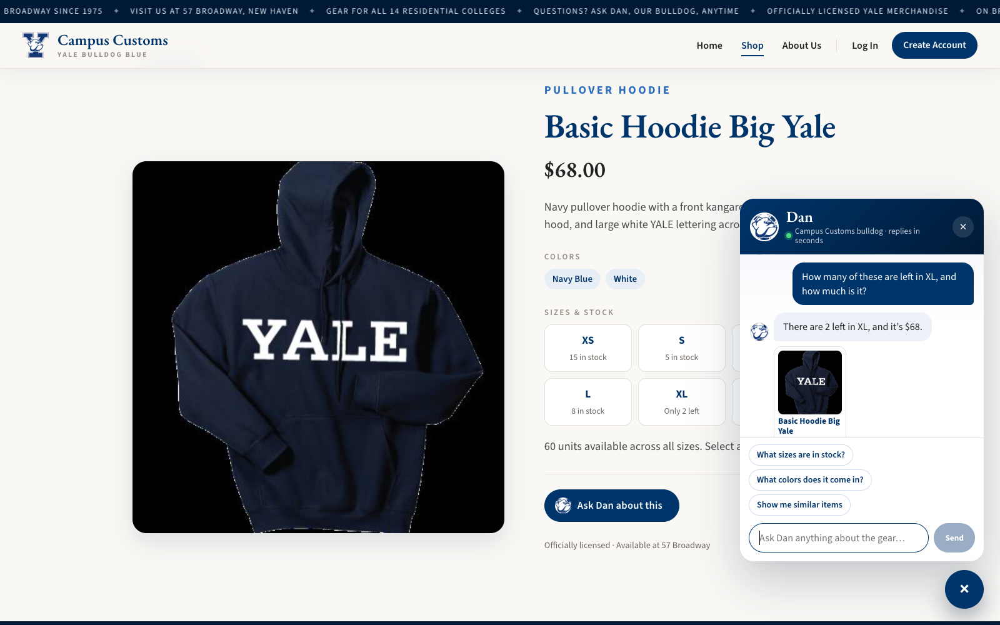
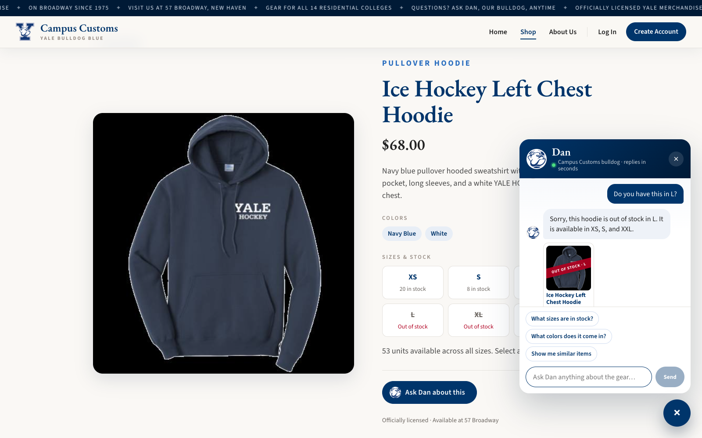
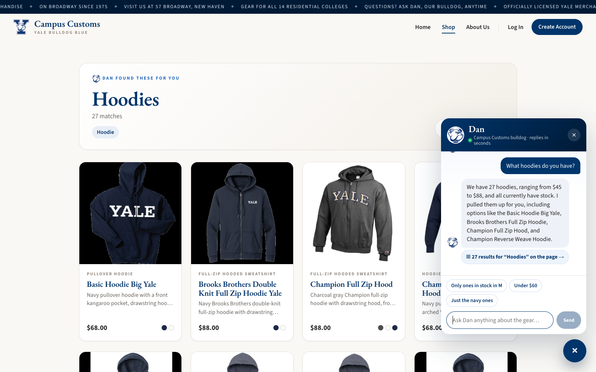
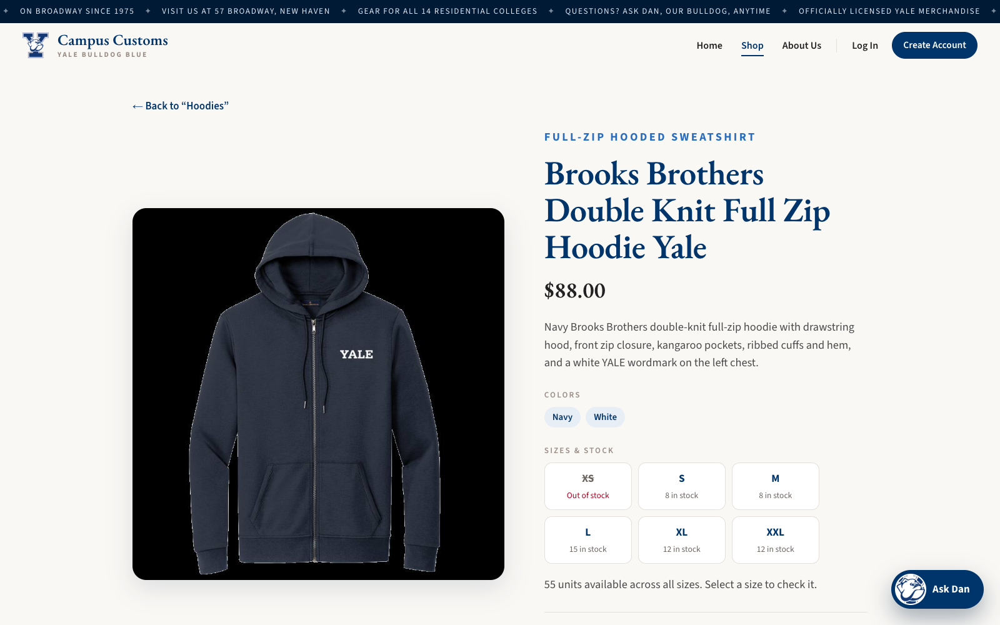
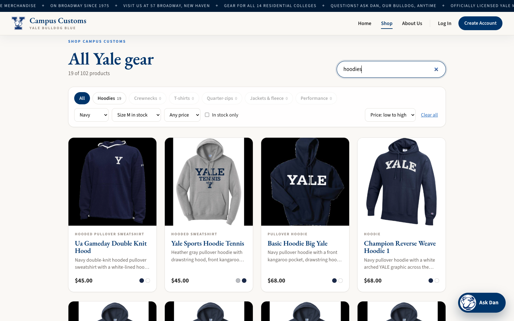

1. Chat checks an item's inventory level PASS
Goal: Dan must answer stock and price questions honestly, from the database, never inventing numbers.
Page: Basic Hoodie Big Yale (/products/basic-hoodie-big-yale)
Shopper asked: "How many of these are left in XL, and how much is it?"
Dan replied: "There are 2 left in XL, and it's $68."

Database check (queried directly with sqlite3)
| Product | catalogue.price | inventory by size | Dan said | |
|---|---|---|---|---|
| Basic Hoodie Big Yale | $68.00 | XS 15 · S 5 · M 5 · L 8 · XL 2 · XXL 25 | "2 left in XL … $68" | match |
| Ice Hockey Left Chest Hoodie | $68.00 | XS 20 · S 8 · M 0 · L 0 · XL 0 · XXL 25 | "out of stock in L … available in XS, S, and XXL" | match |
Honesty when stock is zero: on the Ice Hockey Left Chest Hoodie page the shopper asked "Do you have this in L?"
Dan replied: "Sorry, this hoodie is out of stock in L. It is available in XS, S, and XXL."

2. Dynamic search-result cards after a category question PASS
Goal: a category question in chat should put matching product cards on the website, and those cards should still open the single-item page.
Started on: Home (/). Shopper asked: "What hoodies do you have?"
Dan replied: "We have 27 hoodies, ranging from $45 to $88, and all currently have stock. I pulled them up for you…"

/products and rendered a "Dan found these for you · Hoodies · 27 matches" header with 27 product cards (image, name, price, short description, and color swatches). The chat shows a "27 results for 'Hoodies' on the page →" link and refinement chips. The API response carried page_results: {title: "Hoodies", total_matches: 27}. The database agrees: 27 hoodie-type products, priced from $45 to $88, none sold out.

/products/brooks-brothers-double-knit-full-zip-hoodie-yale, the Problem 3 single-item page, with the large image, $88.00, the full description, colors, and per-size stock. The "← Back to 'Hoodies'" link returns to the same results.
3. Problem 9 usability feature: smart search + filters PASS
Goal: show that a Problem 9 improvement works in the running app. Before Problem 9, typing "hoodies" returned 0 results, because the search only matched the exact text typed, and there was no way to filter by color or size.

/ jumped to the search box. Typing "hoodies" (plural) now finds 27 items, and choosing Navy + Size M in stock + Price: low to high narrowed it to 19 of 102 products, cheapest first ($45, $45, $68…). The category chips updated their live counts (Hoodies 19, others 0). The filters are saved in the URL (/products?q=hoodies&color=Navy&size=M&sort=price_asc), so Back and reload keep them.
Verification
| Step | Result count shown |
|---|---|
| Products page loaded | 102 products |
| Typed "hoodies" | 27 of 102 (was 0 before Problem 9) |
| + Navy, + Size M in stock, sorted by price | 19 of 102 |
Cross-check: fetched /api/products and verified every one of the 19 shown items | 19/19 have navy in their colors and M in stock (0 mismatches) |
Findings from this test run FOUND & FIXED
While retaking the out-of-stock screenshot, one chat request failed and Dan showed "The chat assistant is having trouble right now." The server log showed a transient TLS error from the model connection (ssl.SSLError: BAD_RECORD_MAC). The Problem 9 code retried once, immediately, and that retry reused the same broken connection and failed too.
Fix (backend/agent.py → run_chat): up to 3 attempts with short back-offs (0.4 s, 0.8 s), and before the last attempt the agent is rebuilt so it gets a fresh HTTP connection pool. A simulated test (two forced TLS failures, then success) now returns a normal reply. The re-run of both inventory checks passed with no errors (the screenshots above are from that re-run).